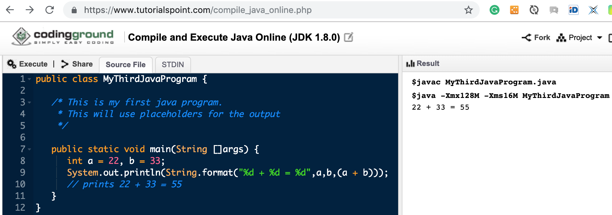

Telecommunications Software RAE-411 Course Report
- Introduction to UNIX SHELL
BACK TO TOP
WEEK 2
Typical tasks to do - Elementary Statistics
Reverse Engineering approach - consider the given figure (created by R) as a result of graphical representation of DATA VECTOR
Find that VECTOR.
BACK TO TOP
WEEK 3
- Refreshed Introduction to Course for new-arrived students
- Hands-on experience in UNIX SHELL
- Possible hardware-related routing issues in IPv4 communications
- An intuitive approach to solving problems
- Secure Terminal Connection to a remote machine (ssh)
BACK TO TOP
WEEK 4
Outline
- Refreshed Introduction to Course for new-arrived students (if any)
- Students report on Homework (Week 3) (AWK scripts)
- Start to study manuals for applied UNIX commands and applications (ping, dig, nslookup, tracepath, date, ssh, scp, vim, mc, top, htop,? ...)?
- Write the script utilizing BASH and AWK for statistical data approval gathered from PING program
- Accomplish BASH course on DATACAMP
- Continuing with hands-on experience in UNIX SHELL and R programming Language
BACK TO TOP
WEEK 5
BACK TO TOP
WEEK 6
Outline
- Students work on Individual Report
- Log into tsc.edx.lv
- In another tab, navigate to http://213.175.92.37:3104
- Copy Individual variant Figure file to a local computer
- Copy data vector values to a clipboard
- In tsc.edx.lv create a new document - MidTerm Exam #1
- Write report combining scripts utilising R and Python:
- Include original Figure file into Markdown document
- Inferential Statistics computing - Average Value or Mean ( X¯) and Standard Deviation ( σ) for given Data Set
- Figure recreation in both programming languages (R and Python)
- Include Markdown Texts making Report concise and nice looking.
- Upload the Report to Assignments section of this Course
- Students install Java SDK on personal Computers
- Short hands-on introduction to Java
- Microproject in R and Python
- Evolve methods and tools computing and visualising the problem given in the figure below:
Links
CLASS NOTES

BACK TO TOP
WEEK 7
This Week - AWS Cloud 9
link
BACK TO TOP
WEEK 8
BACK TO TOP
WEEK 9
BACK TO TOP
WEEK 10
BACK TO TOP
WEEK 11
Create a new personal project on GITHUB: 411-MTP
Combine Tools: Google Colab Notebook and Linux BASH Terminal
-
Ping 5 hosts in five different countries (e.g. USA, DE, LV, IN, BR, ME, KO etc.) with a time interval 3 sec.
- Collect responses from 100 pings
- Organise Data storage in five columns Pandas Data Frame
- On the next step, use Pandas DF to retrieve:
-
data of ping RTT for each country, specifically:
- average
- standard deviation
- variance
- depict Data using HISTOGRAMS (for each separate country)
in a one Figure Integrated BOXPLOTs
Complete report on GITHUB by amending README.md
Share the Link to Project uploading to Course Commons
BACK TO TOP
WEEK 12
BACK TO TOP
WEEK 13
Topic of the week
Capturing Data Packets in BASH using WIREWSHARK CLI
Expected Students' Outcome:
- Page (wiki) on GITHUB revealing Experiment Results in Lab Az12-203
Start with:
https://www.wireshark.org/docs/wsug_html_chunked/ChCustCommandLine.html
In Room Az12-203 use
-
tshark
- or tcpdump
, depending on UBUNTU version ( see how the PROMT differs)
Homework
-
Continue with creation of study guide "How to use wireshark (tcpdump) in terminal" (on Github)
- Install R-Shiny on student's local computer
- Install and run GRAFANA on student's local computer
Class Notes
| sudo groupadd pcap |
| sudo usermod -a -G pcap nonrootuser |
| sudo chgrp pcap /usr/sbin/tcpdump |
| sudo chmod 750 /usr/sbin/tcpdump |
| sudo setcap cap_net_raw,cap_net_admin=eip /usr/sbin/tcpdump |
BACK TO TOP
WEEK 14
Topics of the week
-
Summary on Data Visualization packages in Python
- Dynamic Data Presentation
Useful Links:
https://towardsdatascience.com/reviewing-python-visualization-packages-fa7fe12e622b
BACK TO TOP
WEEK 15
Course REPORT on GitHub
-
Students reflect their achievements including links to other GitHub Repos, Google Colabs, etc..
- Reports have to be structured by weeks in descending order:
-
Week 14
- Week 13
- ...
- Week 1
Preparing for Examination
-
Data Capturing, Filtering, Statistical Analysis, and Reporting (Week 16)
BACK TO TOP
WEEK 16
Activity in Class:
- Performance Measures in Telecommunications
- Figure 1. Data Volume impact on transfer time.
- Data transfer performance measure using "time" command
- Organise the experiment on two different scales:
- copy files with specified size to another folder in the same system
- copy files with specified size to another system over the network using "nc" tool and two distinguished protocols:
- Simultaneously, capture network traffic utilising TCPDUMP library (bash, Python, C++, or Java)
- Present Data Flow as in Figure 1.
TODO this week out of the class:
Create GITHUB REPO 411-w16 exposing student's work progress
- Follow the IMRAD scheme:
-
Introduce to research question(s);
- describe applied tools, methods, and process;
- reveal the research process;
- present research results using Data tables and Figures;
- conclude the report of research.
Finally, Link REPO 411-w16 to Student's Course REPO
BACK TO TOP